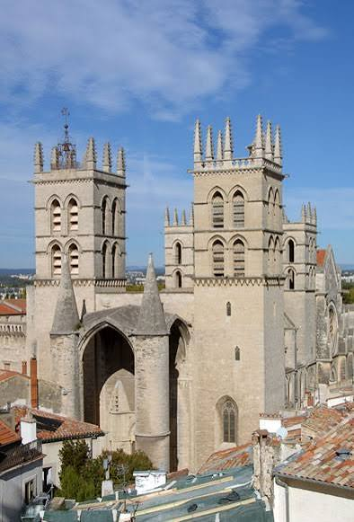

Cathédrale
Saint-Pierre


⟹ Édifices religieux ⟸
Une fondation pontificale avant d'être une cathédrale. Saint-Pierre naît au XIVe siècle dans un contexte très différent de celui des anciennes cathédrales médiévales. Elle est d'abord l'église du monastère-collège Saint-Benoît-Saint-Germain, fondé en 1364 par le pape Urbain V. Né Guillaume de Grimoard, ancien étudiant puis enseignant en droit canonique à Montpellier, Urbain V souhaite renforcer dans la ville la formation intellectuelle des religieux bénédictins et soutenir le rayonnement de son université.
Le monastère est construit contre la muraille occidentale de Montpellier par des maîtres d'œuvre liés à la papauté d'Avignon, notamment Bernard de Manse et Bertrand de Nogayrol. L'église est consacrée en 1367 et le pape y dépose des reliques de saint Benoît et de saint Germain. La dédicace solennelle marquant l'achèvement du chantier est célébrée le 11 septembre 1373, trois ans après la mort d'Urbain V.

Une église déjà pensée comme une forteresse. Dès l'origine, l'édifice présente une architecture particulièrement massive. Le contexte de la guerre de Cent Ans, les passages de compagnies armées dans le Midi et la proximité immédiate des remparts expliquent en partie cette apparence défensive. Quatre tours carrées, de puissants contreforts, des murs épais et le spectaculaire porche-baldaquin soutenu par deux énormes piles cylindriques donnent à l'église une physionomie unique dans le gothique méridional.
1536 : de Maguelone à Montpellier. Pendant près de deux siècles, l'église reste celle du collège bénédictin. Son destin change lorsque le pape Paul III autorise, en 1536, le transfert du siège épiscopal de Maguelone à Montpellier. L'ancien siège insulaire est devenu peu pratique et vulnérable, tandis que Montpellier s'affirme comme le principal centre urbain, universitaire et politique du territoire. L'évêque Guillaume Pellicier le Jeune installe donc l'évêché dans l'ancien monastère : l'église devient cathédrale et reprend le vocable de Saint-Pierre-et-Saint-Paul hérité de Maguelone.
Le « fort Saint-Pierre » dans les guerres de Religion. Quelques décennies plus tard, Montpellier devient l'un des principaux foyers protestants du Languedoc. En 1561, les autorités et les catholiques se retranchent dans l'ensemble cathédral, transformé en camp fortifié. Le 20 octobre, les protestants prennent d'assaut le monastère et pillent la cathédrale. Le mobilier est détruit et des traces de tirs demeurent encore visibles sur la tour Urbain V.
Les violences reprennent en 1567. Après un siège de quarante-huit jours, la tour Saint-Benoît s'effondre et entraîne avec elle une partie de la façade méridionale, le porche et les premières travées de la nef. Très gravement mutilée, la cathédrale reste pendant plusieurs décennies en mauvais état. Son rôle de réduit catholique au milieu d'une ville largement acquise à la Réforme explique le surnom de « fort Saint-Pierre » qui lui reste attaché.
La restauration catholique du XVIIe siècle. Après la soumission de Montpellier à Louis XIII en 1622, la reconstruction des lieux de culte s'inscrit dans le mouvement de la Contre-Réforme. Un projet de cathédrale entièrement nouvelle est envisagé, mais son coût conduit à restaurer Saint-Pierre. Sous l'impulsion de l'évêque Pierre de Fenouillet et avec l'appui du pouvoir royal, la nef, les portails, les chapelles, le porche et les tours sont réparés ; l'essentiel de cette grande campagne s'achève vers 1650.
Le XVIIIe siècle et la transformation du chœur. La liturgie et le goût classique conduisent ensuite à modifier profondément l'extrémité nord de l'édifice. En 1775, le chœur médiéval est remplacé par un nouvel aménagement classique : les stalles sont déplacées et le maître-autel rapproché des fidèles. Cette intervention change durablement l'organisation intérieure avant les grandes restaurations du siècle suivant.
Révolution et Concordat. Pendant la Révolution, l'ensemble épiscopal est confisqué. La cathédrale est dépouillée de sa fonction religieuse, utilisée comme temple civique puis mise au service des hospices militaires ; le culte y est rétabli en 1797. L'ancien palais épiscopal, après avoir servi de prison, accueille la nouvelle École de médecine, installée en 1797 — origine de la proximité actuelle entre la cathédrale et la faculté de médecine.
Le Concordat réorganise ensuite la carte religieuse. Saint-Pierre est officiellement rendue au culte en 1802 et le diocèse de Montpellier absorbe les anciens diocèses de Lodève, Béziers, Agde et Saint-Pons-de-Thomières. En 1847, le pape Pie IX accorde à la cathédrale le titre de basilique mineure.
Le grand chantier du XIXe siècle. À l'époque où la France redécouvre son patrimoine médiéval, Saint-Pierre fait l'objet de transformations considérables. À partir du milieu du XIXe siècle, l'architecte Henri Révoil agrandit et « regothicise » l'édifice : le chœur classique du XVIIIe siècle est supprimé, le chevet est reconstruit et l'ensemble prend une ampleur nouvelle inspirée de l'idéal des grandes cathédrales gothiques. Ces interventions expliquent que le monument actuel associe étroitement des parties médiévales authentiques et d'importantes restitutions du XIXe siècle.
De monument diocésain à monument national. La cathédrale est classée au titre des Monuments historiques en 1906 et appartient à l'État. Depuis le XXe siècle, de nombreuses campagnes de conservation concernent ses maçonneries, ses décors et son mobilier. Le spectaculaire baldaquin du porche a notamment fait l'objet d'une restauration achevée en 2013. En 2002, la réorganisation des provinces ecclésiastiques françaises élève Montpellier au rang d'archidiocèse métropolitain, renforçant encore le rôle de Saint-Pierre dans la géographie religieuse régionale.
Née comme église d'un collège pontifical, devenue forteresse pendant les guerres de Religion puis cathédrale métropolitaine, Saint-Pierre concentre six siècles d'histoire montpelliéraine.
Du collège d'Urbain V à la cathédrale actuelleUne forteresse malgré elle : mâchicoulis, créneaux et chemin de ronde ne relèvent pas d'un simple goût décoratif — la cathédrale a réellement servi de refuge fortifié durant les guerres de Religion, avant de mériter son surnom de « fort Saint-Pierre ».
Le regard de Mérimée : en visite à Montpellier en 1834, l'écrivain et inspecteur des Monuments Historiques Prosper Mérimée jugea sévèrement le porche, le trouvant plus imposant que gracieux — un avis que dément aujourd'hui sa restauration soignée.
Un cloître voisin : l'ancien cloître du monastère Saint-Benoît, aujourd'hui cour d'honneur de la Faculté de Médecine, abrite le Theatrum Anatomicum, témoin de l'ancienne vocation d'enseignement du site.
Un cœur de paroisse élargi : depuis 2002, la cathédrale fédère toutes les églises du centre-ville de Montpellier, de la basilique Notre-Dame des Tables à l'église Saint-Roch.
Adresse place de la Canourgue, 34000 Montpellier, dans le quartier de l'Écusson.
Visite libre ouverte tous les jours, entrée gratuite ; horaires d'ouverture affichés sur place, hors offices.
Tour Urbain V montée possible (200 marches) lors de visites organisées par l'office de tourisme, notamment en été.
Accès à deux pas de la Faculté de Médecine et de la place de la Canourgue, en plein centre historique.